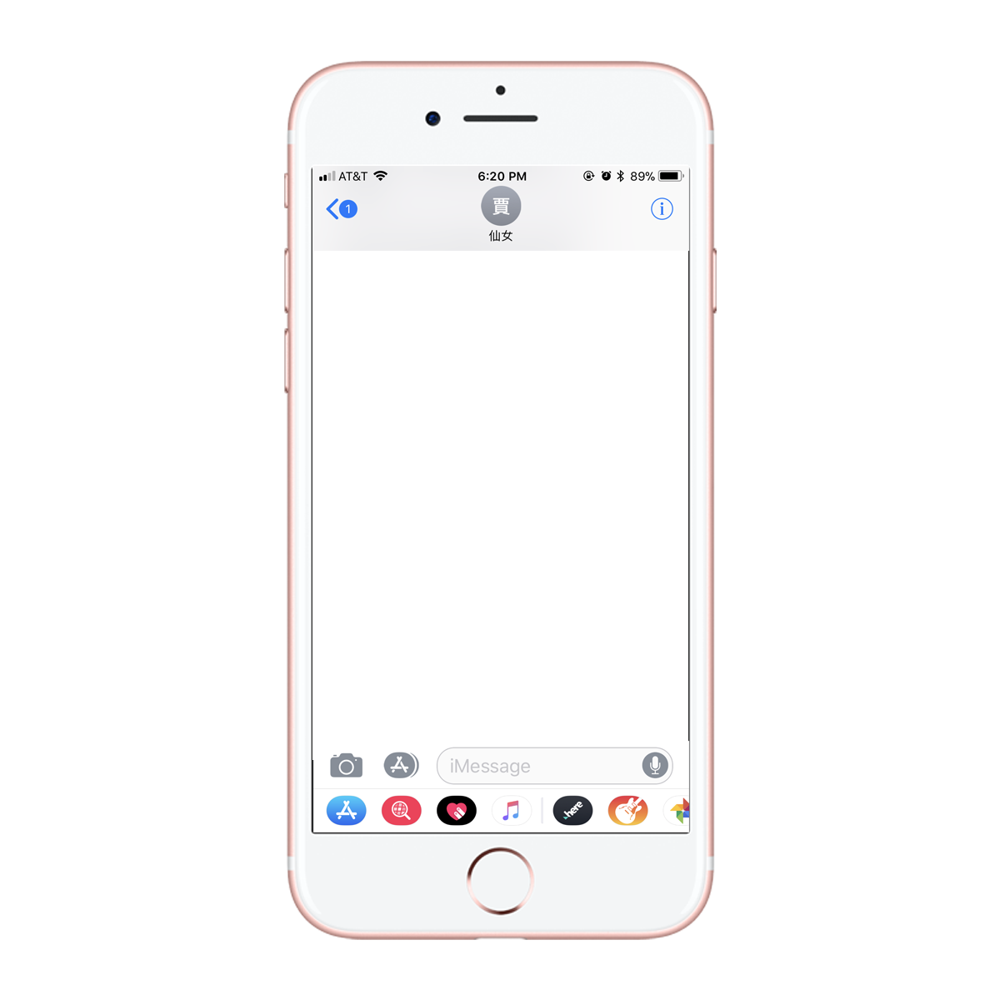

Some common forms of personal messaging include Facebook messaging (sometimes referred to as "inboxing"), Twitter direct messaging, Instagram direct messaging, and snapchatting. All of these forms of personal or private messaging create a way for the user to make a private space on a usually public site. For example, most activity on Facebook is public, even if only to one's friends. Messaging or "inboxing" on Facebook allows for a private space. This is different from email and even texting, where the "usual" uses are private anyway.
> 